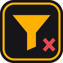

SiteFilter
Hide the listings you never want to see. Filter by keyword, price, seller link or sponsored badge on any marketplace, and strip ad slots while you're at it.
Interface in English, Türkçe and Azərbaycanca.
Install (2 minutes)
- Download BAKHY-SiteFilter.zip and unzip it. You get a folder called
SiteFilter. - Open
chrome://extensionsin Chrome (Edge:edge://extensions, Brave, Opera and Yandex work too). - Turn on Developer mode in the top-right corner.
- Click Load unpacked and pick the
SiteFilterfolder. Pin the funnel icon from the puzzle menu.
Keep the folder where it is: Chrome loads the extension from it. To update, replace the folder's contents and press the reload arrow on the extension card.
Using it
- Toolbar icon: add words, switch between “Hide matches” and “Show only these”, set a price range, toggle ads and sponsored listings. The badge counts what was removed on the page.
- Right-click a listing link → “SiteFilter: hide this listing”. Select text → “hide listings containing …”.
- Pick & hide (Alt+Shift+X): hover, use ↑/↓ to grow or shrink the box, click, then hide that listing, that element, or every element like it.
- Turn a site off with Alt+Shift+F. “Show hidden” outlines filtered listings instead of removing them.
- Settings page: words for every site, custom sponsor badges, per-site rules, fade instead of remove, JSON export / import.
Keyword syntax
kırık | anywhere, ignoring case and accents: matches “KIRIK”, “kirik” |
"kira" | whole word only: “kira” but not “kiralık” |
iphone & sınıq | every part has to appear |
/v\d{2}/ | a JavaScript regular expression |
Sites
Tuned layouts for Tap.az, Turbo.az, Bina.az, Lalafo, Sahibinden, Arabam, Hepsiemlak, Emlakjet, Trendyol, Hepsiburada, N11, Letgo, OLX, Avito, Kolesa / Krisha, eBay, Amazon, AliExpress, Etsy, Facebook Marketplace, YouTube and Google search. Every other site uses automatic card detection (repeating blocks with a link), and you can teach it the right card with the picker.
Privacy
No account, no servers, no analytics. Rules live in chrome.storage.local on your computer. The extension needs access to the pages you visit only to read and hide listings on them. Source code is in the repository under the MIT licence.